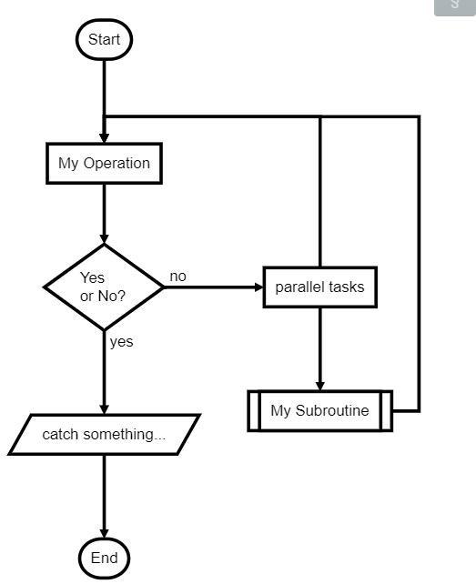

Table of Contents
1. 数学符号&公式
| 符号 | 代码 | 描述 |
|---|---|---|
| ∑ \sum∑ | $\sum$ | 求和公式 |
| ∑ni=0 \sum_ | $\sum_ | 求和上下标 |
| × \times× | $\times$ | 乘号 |
| ± \pm± | $\pm$ | 正负号 |
| ÷ \div÷ | $\div$ | 除号 |
| ∣ \mid∣ | $\mid$ | 竖线 |
| ⋅ \cdot⋅ | $\cdot$ | 点 |
| ∘ \circ∘ | $\circ$ | 圈 |
| $\ast | $ | $\ast |
| ⨂ \bigotimes⨂ | $\bigotimes$ | 克罗内克积 |
| ⨁ \bigoplus⨁ | $\bigoplus$ | 异或 |
| ≤ \leq≤ | $\leq$ | 小于等于 |
| ≥ \geq≥ | $\geq$ | 大于等于 |
| ≠ \neq̸ | ||
| = | $\neq$ | 不等于 |
| ≈ \approx≈ | $\approx$ | 约等于 |
| ∏ \prod∏ | $\prod$ | N元乘积 |
| ∐ \coprod∐ | $\coprod$ | N元余积 |
| ⋯ \cdots⋯ | $\cdots$ | 省略号 |
| ∫ \int∫ | $\int$ | 积分 |
| ∬ \iint∬ | $\iint$ | 双重积分 |
| ∮ \oint∮ | $\oint$ | 曲线积分 |
| ∞ \infty∞ | $\infty$ | 无穷 |
| ∇ \nabla∇ | $\nabla$ | 梯度 |
| ∵ \because∵ | $\because$ | 因为 |
| ∴ \therefore∴ | $\therefore$ | 所以 |
| ∀ \forall∀ | $\forall$ | 任意 |
| ∃ \exists∃ | $\exists$ | 存在 |
| ̸ = \not= ≠ | $\not=$ | 不等于 |
| ̸ > \not> | > | $\not>$ |
| ≤ \leq≤ | $\leq$ | 小于等于 |
| ≥ \geq≥ | $\geq$ | 大于等于 |
| 符号 | 代码 | 描述 |
|---|---|---|
| ̸ ⊂ \not\subset | ⊂ | $\not\subset$ |
| ∅ \emptyset∅ | $\emptyset$ | 空集 |
| ∈ \in∈ | $\in$ | 属于 |
| ∉ \notin∈ / | $\notin$ | 不属于 |
| ⊂ \subset⊂ | $\subset$ | 子集 |
| ⊆ \subseteq⊆ | $\subseteq$ | 真子集 |
| ⋃ \bigcup⋃ | $\bigcup$ | 并集 |
| ⋂ \bigcap⋂ | $\bigcap$ | 交集 |
| ⋁ \bigvee⋁ | $\bigvee$ | 逻辑或 |
| ⋀ \bigwedge⋀ | $\bigwedge$ | 逻辑与 |
| ⨄ \biguplus⨄ | $\biguplus$ | 多重集 |
| ⨆ \bigsqcup⨆ | $\bigsqcup$ | |
| yˆ \hat | $\hat |
| 符号 | 代码 | 描述 |
|---|---|---|
| \overbrace | ||
| ↑ \uparrow↑ | $\uparrow$ | 向上 |
| ↓ \downarrow↓ | $\downarrow$ | 向下 |
| ⇑ \Uparrow⇑ | $\Uparrow$ | |
| ⇓ \Downarrow⇓ | $\Downarrow$ | |
| → \rightarrow→ | $\rightarrow$ | 向右 |
| ← \leftarrow← | $\leftarrow$ | 向左 |
| ⇒ \Rightarrow⇒ | $\Rightarrow$ | 向右箭头 |
| ⟸ \Longleftarrow⟸ | $\Longleftarrow$ | 向左长箭头 |
| ⟵ \longleftarrow⟵ | $\longleftarrow$ | 向左单箭头 |
| ⟶ \longrightarrow⟶ | $\longrightarrow$ | 向右长箭头 |
| ⟹ \Longrightarrow⟹ | $\Longrightarrow$ | 向右箭头 |
| α \alphaα | $\alpha$ | |
| β \betaβ | $\beta$ | |
| γ \gammaγ | $\gamma$ | |
| Γ \GammaΓ | $\Gamma$ | |
| δ \deltaδ | $\delta$ | |
| Δ \DeltaΔ | $\Delta$ | |
| ϵ \epsilonϵ | $\epsilon$ | |
| ε \varepsilonε | $\varepsilon$ | |
| ζ \zetaζ | $\zeta$ | |
| η \etaη | $\eta$ | |
| θ \thetaθ | $\theta$ | |
| Θ \ThetaΘ | $\Theta$ | |
| ϑ \varthetaϑ | $\vartheta$ | |
| ι \iotaι | $\iota$ | |
| π \piπ | $\pi$ | |
| ϕ \phiϕ | $\phi$ | |
| Φ \PhiΦ | $\Phi$ | |
| ψ \psiψ | $\psi$ | |
| Ψ \PsiΨ | $\Psi$ | |
| ω \omegaω | $\omega$ | |
| Ω \OmegaΩ | $\Omega$ | |
| χ \chiχ | \chi | |
| ρ \rhoρ | $\rho$ | |
| ο \omicronο | $\omicron$ | |
| σ \sigmaσ | $\sigma$ | |
| Σ \SigmaΣ | $\Sigma$ | |
| ν \nuν | $\nu$ | |
| ξ \xiξ | $\xi$ | |
| τ \tauτ | $\tau$ | |
| λ \lambdaλ | $\lambda$ | |
| Λ \LambdaΛ | $\Lambda$ | |
| μ \muμ | \mu | |
| ∂ \partial∂ | $\partial$ | |
| $\lbrace \rbrace$ | ||
| a¯ \overline | $\overline |
2. 参考文献
引文的插入格式[^StackOverflow_2007_web] [^StackOverflow_2007_web]:XXXX
3. 段落自动编号
VScode 下安装 markdownIndex 插件，F1 执行markdown add index
4. VSCode- Markdown Preview Enhanced
5. 绘图
5.1. 流程图
使用flow
```flow st=>start: Start:>http://www.google.com[blank] e=>end:>http://www.google.com op1=>operation: My Operation sub1=>subroutine: My Subroutine cond=>condition: Yes or No?:>http://www.google.com io=>inputoutput: catch something... para=>parallel: parallel tasks st->op1->cond cond(yes)->io->e cond(no)->para para(path1, bottom)->sub1(right)->op1 para(path2, top)->op1 ```

5.2. 序列图
```mermaid sequenceDiagram participant Alice participant Bob Alice->>John: Hello John, how are you? loop Healthcheck John->>John: Fight against hypochondria end Note right of John: Rational thoughts <br/>prevail! John-->>Alice: Great! John->>Bob: How about you? Bob-->>John: Jolly good! ```
5.3. 甘特图
gantt title 项目开发流程 section 项目确定 需求分析 :a1, 2016-06-22, 3d 可行性报告 :after a1, 5d 概念验证 : 5d section 项目实施 概要设计 :2016-07-05, 5d 详细设计 :2016-07-08, 10d 编码 :2016-07-15, 10d 测试 :2016-07-22, 5d section 发布验收 发布: 2d 验收: 3d
6. TODO list
使用 - [ ] (-空格-[空格])
- [ ] 小专栏 Markdown 编辑器开发
- [ ] 增加 TOC 语法
- [x] 增加流程图、序列图、甘特图、Todo 列表
- [x] 新增Todo列表功能 语法参考
- [x] 改进 LaTex 功能
- [x] 修复 LaTex 公式渲染问题
- [x] 新增 LaTex 公式编号功能 语法参考
- [ ] 最近小专栏推广
- [x] 唐巧微信公众号广告投放
- [ ] 二月份小专栏微信服务号文章准备
- [ ] 邀请更多技术牛人到小专栏写作
7. 链接
[XXXX](http://www.baidu.com)
8. 参考资料
-
https://zhuanlan.zhihu.com/p/56699805 ↩